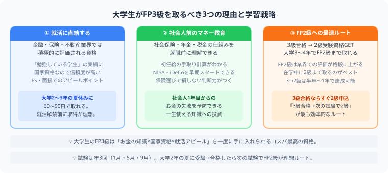

大学生がFP3級を取るべき理由とベストなタイミング【2026年版】
FP3級（ファイナンシャルプランナー3級）は、税金・保険・年金・資産運用・住宅ローンなどお金の基礎知識を体系的に学べる国家資格です。合格率70〜80%と取りやすく、就活にも自分の生活にも活きる。大学生のうちに取っておかない理由がない資格のひとつです。
FP3級の基本情報

大学生のFP3級は「お金の知識×国家資格×就活アピール」を同時に手に入れられる最高コスパの資格です。2024年からCBT方式（通年受検）に完全移行しているため、夏休み等の空いている期間を選んで自由に受検日を設定できます。
- FP3級は合格率60〜70%台で大学生のうちに取る価値が高い
- 2024年からCBT方式に移行、夏休み等好きなタイミングで受検できる
- 簿記との相乗効果が高く、簿記3級→簿記2級→FP3級→FP2級のルートが定番
- FP2級の受験資格としてFP3級合格が前提条件になる
| 項目 | 内容 |
|---|---|
| 試験回数 | 2024年からCBT方式に移行（通年で受検日を選択可能） |
| 合格率 | 約70〜80% |
| 必要勉強時間 | 60〜100時間（初学者） |
| 試験形式 | 学科（択一60問）＋実技（記述） |
| 合格基準 | 学科・実技ともに60%以上 |
| 受験料 | 約4,000〜6,000円 |
大学生がFP3級を取るべき5つの理由
①就活のエントリーシートに書ける資格として有効
FP3級は金融・保険・不動産業界の就活で特に評価されます。「お金の知識を自主的に学んだ」という姿勢を示す証拠になります。難易度が高すぎないため「とりあえず取った」と思われるリスクも低く、FP2級へのステップアップを明示すればさらに評価が上がります。
②簿記3級・2級との相乗効果が高い
簿記で学んだ「企業のお金の流れ」とFPで学ぶ「個人のお金の流れ」は補完関係にあります。税金の仕組み・財務諸表の読み方など重なる知識があるため、簿記を持っている人はFP3級の学習がスムーズに進みます。
③実生活で即使える知識が身につく
FP3級で学ぶ内容——社会保険・年金・所得税・住宅ローン・生命保険の選び方——はすべて社会人になった後に必ず直面するテーマです。就職後に「こんなこと知らなかった」と後悔する前に、学生のうちに体系的に学べるのは大きなメリットです。
④FP2級受験の前提条件になる
FP2級の受験には「FP3級合格」または「2年以上の実務経験」が必要です。大学生には実務経験がないため、FP2級を受けたければ必ずFP3級を先に取る必要があります。FP3級は「FP2級への入場券」でもあります。
⑤合格率が高く達成感を得やすい
難しい資格が続いてモチベーションが下がってきたとき、合格率70〜80%のFP3級は「確実に合格できた」という達成感を与えてくれます。勉強の習慣を切らさないためのステップとしても機能します。
大学生がFP3級を取るベストなタイミング
| 学年 | おすすめの動き |
|---|---|
| 1年生 | 簿記3級を取得してからFP3級へ。お金の基礎を早めに固める |
| 2年生 | 簿記2級と並行または直後にFP3級取得。FP2級への道を開く |
| 3年生 | 就活前にFP3級取得。金融・保険・不動産志望なら必須 |
| 4年生 | 就活中でも60〜100時間で取れるため、内定後の取得でも価値あり |
よくある組み合わせルート
経理・財務・一般企業 志望
銀行・保険・証券 志望
幅広い知識を持つビジネスパーソンを目指す
FP3級の独学に必要なもの
- テキスト1冊：「みんなが欲しかった！FPの教科書3級（TAC出版）」が定番。フルカラーで読みやすい。
- 問題集1冊：テキストとセットの問題集を1周解けば合格圏内に入る。
- 過去問（無料）：日本FP協会のサイトで過去問が無料公開されている。直前期に3〜5年分を解けば十分。
📋 まとめ：大学生とFP3級 早見表
お金の知識は、知っているだけで人生の選択肢が増えます。
この記事が少しでも参考になったら、この下にある【いいねボタン】をポチッと押してもらえると、めちゃくちゃ嬉しいです！ そして、Study Questで今日の学習時間を記録して、合格までの成長を「見える化」していきましょう。
まとめ
- FP3級は合格率70〜80%で取りやすく、大学生のうちに取る価値が高い
- 就活（特に金融・保険・不動産）での差別化、実生活での活用、FP2級への前提として三役こなす
- 簿記3級・2級との相乗効果が高く、どちらかを持っていればスムーズに学習できる
- テキスト1冊＋問題集1冊＋過去問で独学合格が十分可能
- 2年生〜3年生のうちに取得しておくと、就活・FP2級への道が広がる